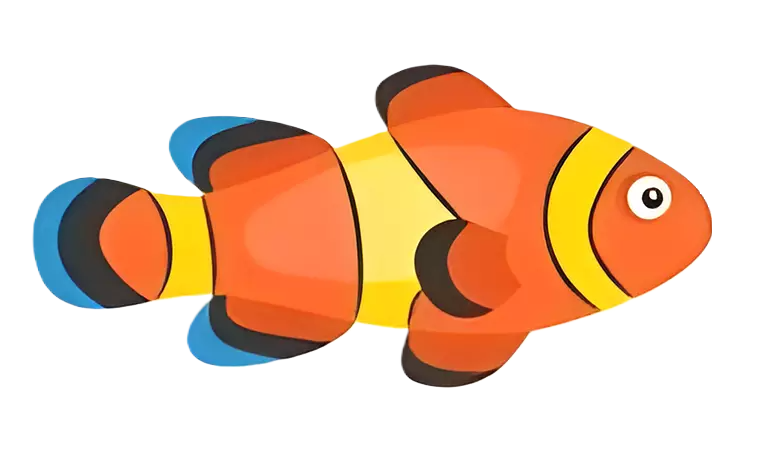
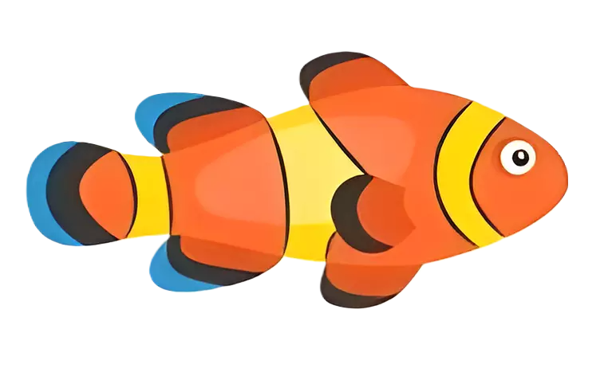

Hi! Namaku Ali. Ali yang akan menemani kalian belajar transformasi geometri!

Pertama, kita akan belajar pengertian transformasi dulu. Kalian siap?
Yahh, alau sudah siap klik tombol "Ayo" yaaa!

Transformasi adalah proses mengubah posisi atau
ukuran suatu objek
Tunggu, aku mau pindah posisi dulu deh.

Berpindah posisi tadi merupakan contoh transformasi lohh
Contoh lain transformasi adalah saat ikan di bawah membesar
 


Sedangkan geometri? kamu sudah mempelajarinya bukan.
Geometri pasti berkaitan dengan titik, garis, dan bangun datar.
Garis
Bangun datar segitiga
Titik
Ayo kita gabungkan pengertian transformasi dan geometri!
Transformasi : proses mengubah posisi atau ukuran suatu objek
Geometri : titik, garis, dan bangun datar
Transformasi geometri adalah suatu perubahan posisi atau ukuran pada titik, garis, atau
bidang
Menurut kamu, apakah persegi di bawah mengalami transformasi?
A
B
C
D

Persegi di bawah mengalami perubahan pada ......nya
A
B
C
D
Lalu, bagaimana membedakan objek yang telah mengalami transformasi dan belum?
A
B
C
D
Coba kamu pindahkan persegi ABCD ke daerah yang bergaris putus putus
A
B
C
D
A
B
C
D

Kamu menemukan perbedaannya?
Yaaa.... Persegi ABCD menjadi persegi A'B'C'D'

Jadi, untuk menandakan sebuah objek telah ditransformasi dengan menambahkan ( ' ) atau
aksen
A
B
C
D
A'
B'
C'
D'

Segitu dulu yaa perkenalan awal transformasi geometri
Setelah ini, akan ada rangkuman dan tes yang bisa kamu kerjakan. Semangat!!!